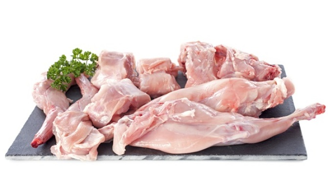

兔肉
兔肉分为野兔肉和家兔肉， 家兔肉又称为菜兔肉。兔肉营养丰富，肉质嫩滑，味道鲜美， 容易被人体消化和吸收。兔肉性凉味甘，享有“荤中之素”、“美容肉”、“保健肉”等的称号。


功效
兔肉对预防高血压、肥胖症都有较好的食疗功效;兔肉富含丰富的烟酸， 能避免皮肤粗糙、发炎，具有滋润皮肤 ，美白养颜的功效。

营养价值
兔肉含有丰富的磷脂，而且比其他肉类更高。常食用，有利于健脑益智， 适宜儿童食用，具有提高记忆力的作用;兔肉中含有丰富的无机盐和钙，有助于儿童骨骼的发育。

适宜人群
一般人群均可食用兔肉;孕妇及经期女性、有明显阳虚症状的女子、脾胃虚寒者不宜食用兔肉。